OBS Studio
You alt-tabbed mid-session. OBS hit a hiccup and stopped recording. You played for another 40 minutes not knowing. That footage is gone.
Mynofi catches this.Mynofi monitors OBS Studio, NVIDIA ShadowPlay, and Audacity simultaneously and fires a desktop notification the instant something starts — or stops. Set it up once, never lose a clip again.

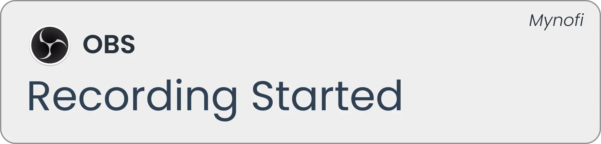
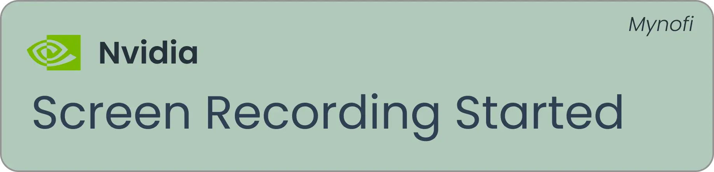
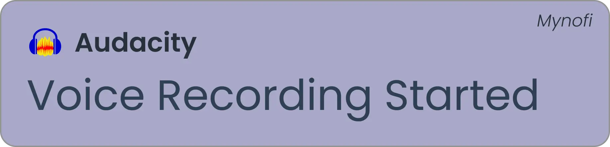
Fix "OBS stopped recording silently"
These aren't edge cases. Silently failed recordings happen to creators of every size, every week.
You alt-tabbed mid-session. OBS hit a hiccup and stopped recording. You played for another 40 minutes not knowing. That footage is gone.
Mynofi catches this.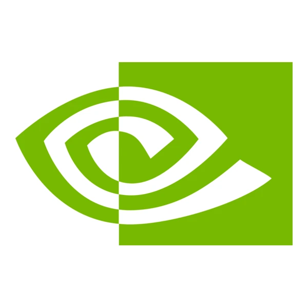
The recording indicator was buried in the corner. The file didn't save — the folder filled up silently three sessions ago.
Mynofi catches this.You didn't. That podcast take — the good one — is gone forever.
Mynofi catches this.Sound familiar?
Every one of these has happened to creators. Without Mynofi, you only find out after the session ends.
You alt-tabbed to check Discord mid-game. OBS hit an encoder error and stopped recording — silently. You played for another 40 minutes. That footage is gone.
You opened Audacity, clicked around, started talking. You thought you hit record. You didn't. 45 minutes of a guest interview. Gone.
You play fullscreen. OBS's status bar is completely hidden. Your disk filled up. ShadowPlay stopped saving clips. You found out three sessions later.
Why you need a dedicated tool
One of the biggest flaws with capture software is the lack of a built-in, highly visible full-screen status overlay. If you game on a single monitor, you can't tell if your OBS recording indicator is active without alt-tabbing. Worse, if your OBS stopped recording silently due to an encoder crash or full hard drive, you won't know until your session is over.
Mynofi solves this by acting as a foolproof failsafe. You don't need to constantly check your second monitor or hunt for an always-on-top widget. Mynofi watches the background processes and uses native Windows Toasts to provide an unmissable desktop alert when recording starts, stops, or crashes. It is the ultimate insurance policy for your footage.
Real notification banners
These are the actual notifications Mynofi fires — straight to your Windows desktop, no matter what you're doing.
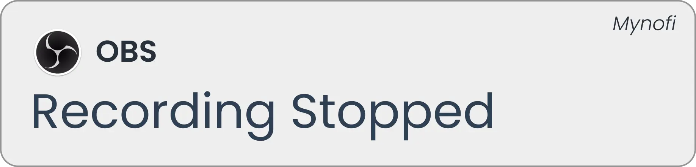
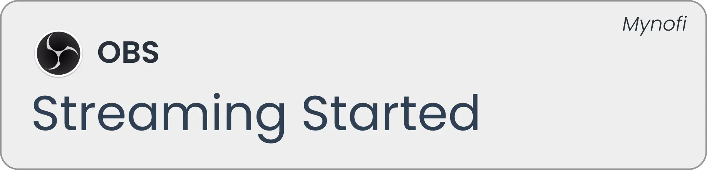
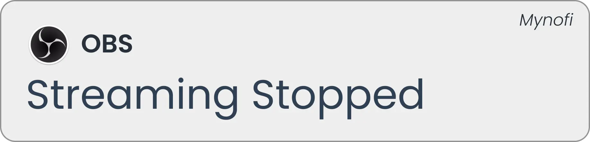
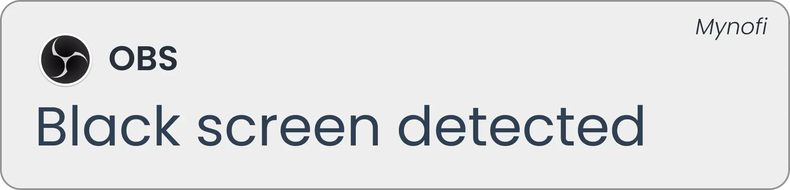
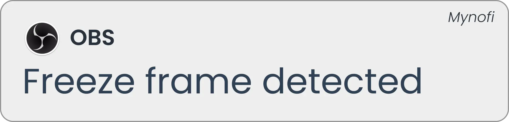
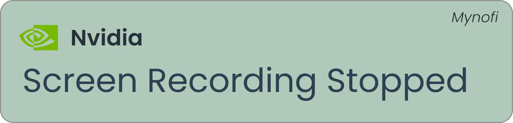
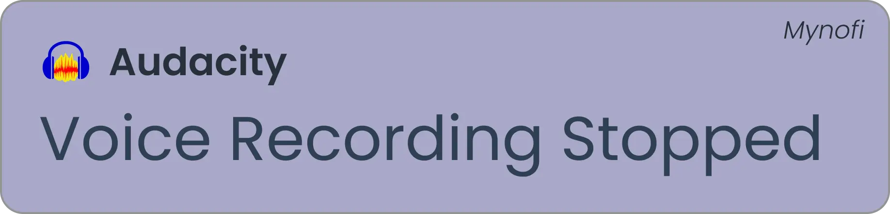
Setup takes 60 seconds
Mynofi runs in your system tray and watches silently. You only hear from it when something happens.
One-time $2.99 purchase. Run the installer — Mynofi starts and sits quietly in your Windows system tray. No bloat, no background services.
Enter your OBS WebSocket port, point to your ShadowPlay recordings folder, and enable the Audacity monitor. One click each, done in under a minute.
A Windows desktop toast notification fires the moment recording starts, pauses, or stops — across all three tools, simultaneously.
What's included
No subscriptions. No cloud. A focused tool that does one thing well and stays out of your way.
Connects to OBS via local WebSocket. Notifies on recording start, stop, pause, stream start/stop, black screen, and freeze frame detection.
Watches your NVIDIA recordings folder for new clip files. Works with any capture tool — AMD ReLive, Game Bar, or custom paths.
Detects voice recording start and stop events in Audacity. Catches both intentional stops and unexpected recording failures.
Each event plays an optional chime alongside the visual toast. Volume is adjustable. Fires even when your game is fullscreen.
Lives in your tray. Right-click to open, pause, or exit. Launch-at-startup option turns it into invisible infrastructure.
Under 50MB RAM. Negligible CPU. Doesn't hook into your game process, record your screen, or touch your GPU.
Pricing
Less than a coffee. One missed recording = hours of your work gone forever. This fixes that, permanently — no subscription ever.
Windows installer · ~65MB · v1.0.36 · Instant download after purchase
✓ Works on first launch · ✓ Setup takes under 2 minutes
FAQ
Straight answers. No fluff.
Mynofi is a Windows desktop utility built for streamers, content creators, and podcasters who use OBS Studio, NVIDIA ShadowPlay, or Audacity as their primary recording tools. It solves one specific, costly problem: you don't always know when your software is actually recording — and that missing awareness costs you footage, takes, and time.
For a one-time purchase of $2.99, Mynofi runs silently in your system tray as a monitoring layer between your recording software and your desktop. When OBS starts recording, Mynofi fires a Windows toast notification. When ShadowPlay saves a clip, Mynofi tells you. When Audacity's session starts or stops, you get a notification — complete with an optional audio chime.
Mynofi's OBS recording notification feature connects to OBS Studio via the built-in OBS WebSocket protocol (available natively in OBS 28+). This is a fully local connection — your session data never leaves your machine. Mynofi detects recording state changes (started, stopped, paused, resumed), streaming events, and even issues like black screen and freeze frame detection — firing a desktop notification for each.
This is the core problem Mynofi solves. OBS has no built-in mechanism to alert you when a recording stops due to a crash, disk-full error, or encoder failure. Without an external tool, you only discover the failure after you finish your session — when the footage is already gone. Mynofi catches the WebSocket event the instant OBS stops and fires a Windows toast notification immediately, even if OBS is minimized or you are in a fullscreen game. The same applies to NVIDIA ShadowPlay and Audacity — you get notified the second something changes, not after the damage is done.
OBS's built-in recording indicator only appears inside the OBS application window — which is completely hidden when you're playing a fullscreen game. Many streamers lose recordings precisely because they alt-tab, miss the crash, and tab back into their game. Mynofi solves this by firing Windows system-level toast notifications that appear over any fullscreen application, including games running in exclusive fullscreen mode. You see the alert immediately, every single time.
For NVIDIA ShadowPlay, Mynofi watches your designated recordings folder for new files — reliable detection that also works with AMD ReLive, Windows Game Bar, or any capture tool that saves to a local folder. For Audacity, it monitors session activity to detect when a recording is live, so you always know whether your microphone is capturing.
If you've ever alt-tabbed out of a game and found OBS stopped recording 30 minutes earlier — Mynofi is for you. If you've ever thought you hit record in Audacity but didn't — Mynofi is for you. If you play fullscreen and can never see OBS's status — Mynofi is for you. At $2.99, it costs less than a coffee and saves you from ever re-recording a lost session again.